University of York, 14/15 Oct 2017 (album on Flickr)
London, Sep 2017 (album on Flickr)
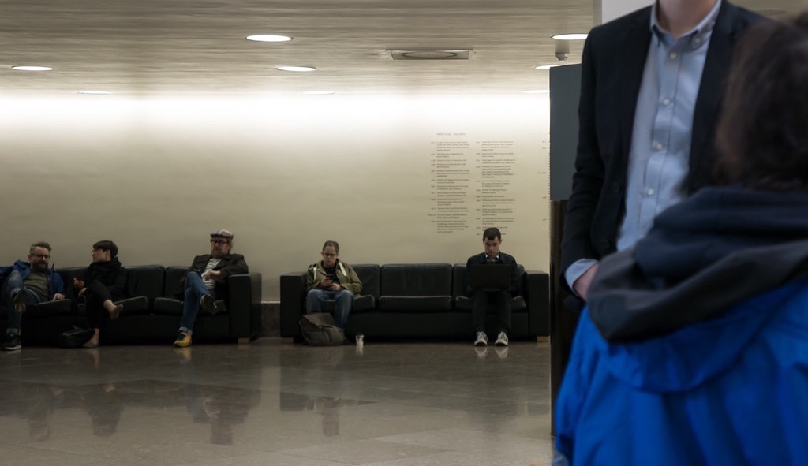
OXO Gallery, London, Jul 2016 (album on Flickr)
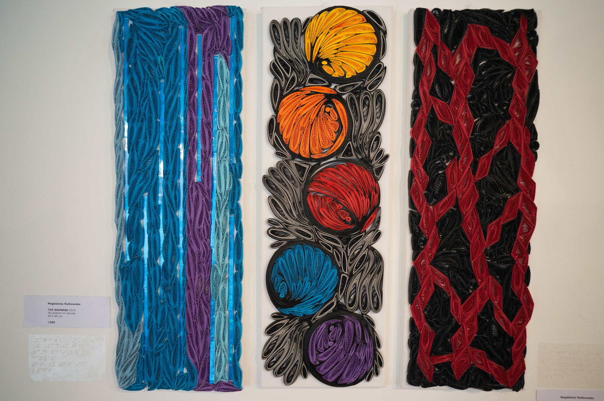
London, Mar 2016 (album on Flickr)
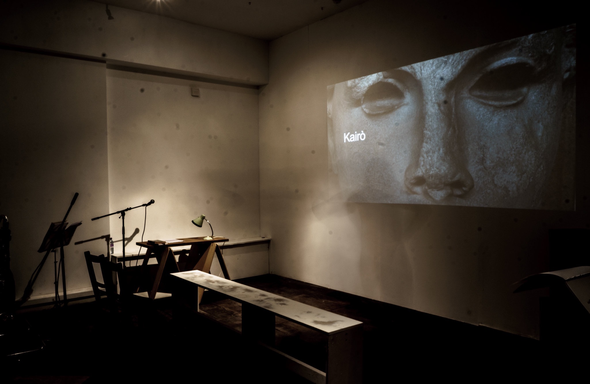
Cambridge, Apr 2014 (album on Flickr)
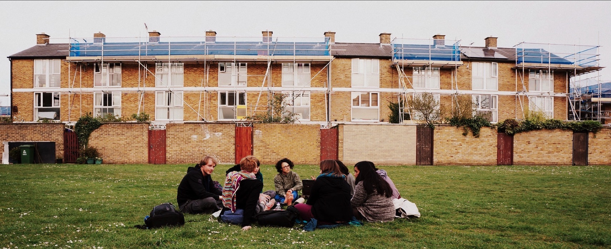
Kings College Chapel, Cambridge, Jul 2015 (album on Flickr)
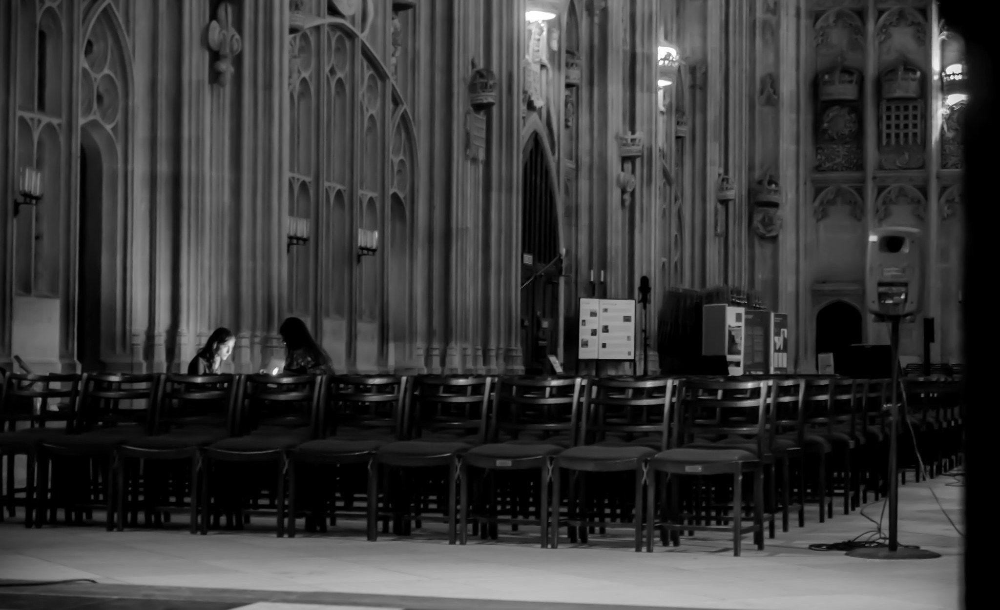
Junction 2, Cambridge, Jul 2015 (album on Flickr)
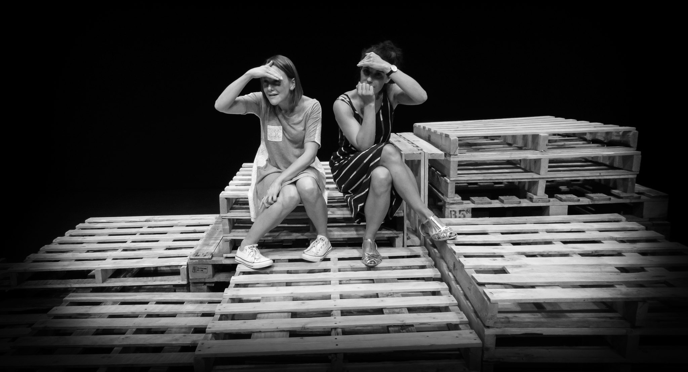
Cambridge, Jul 2015 (album on Flickr)
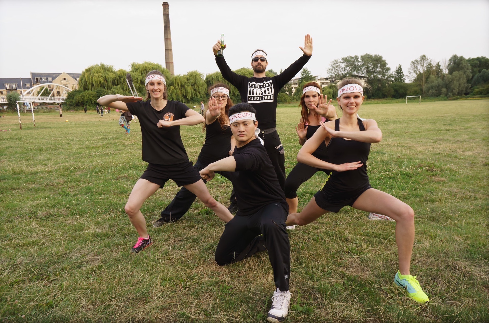
ARU, Cambridge, Jul 2015 (album on Flickr)
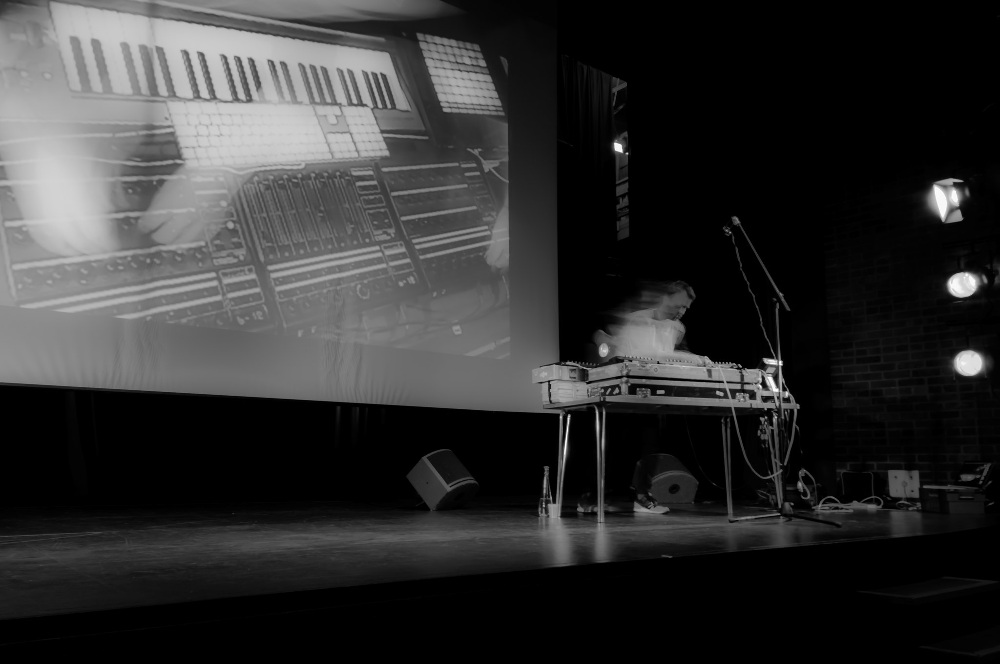
St Paul’s Church, Cambridge, May 2015 (album on Flickr)
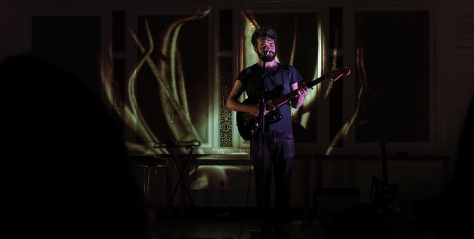
Grafton, Cambridge, May 2015 (album on Flickr)
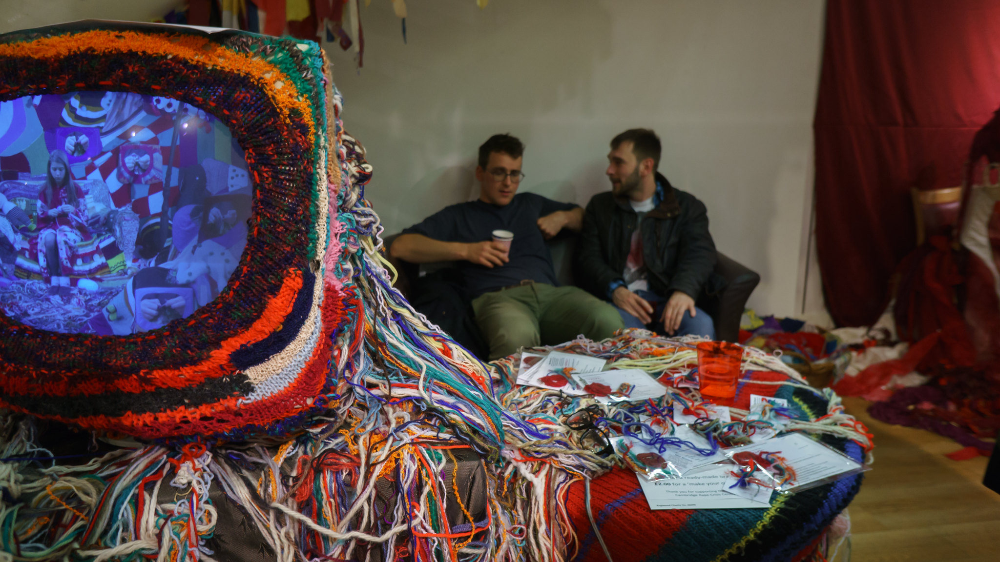
St Philip’s Church, Cambridge, Feb 2015 (album on Flickr)
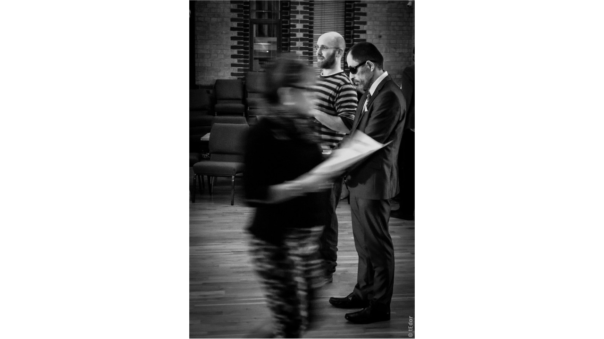
Cambridge, Dec 2014 (album on Flickr)
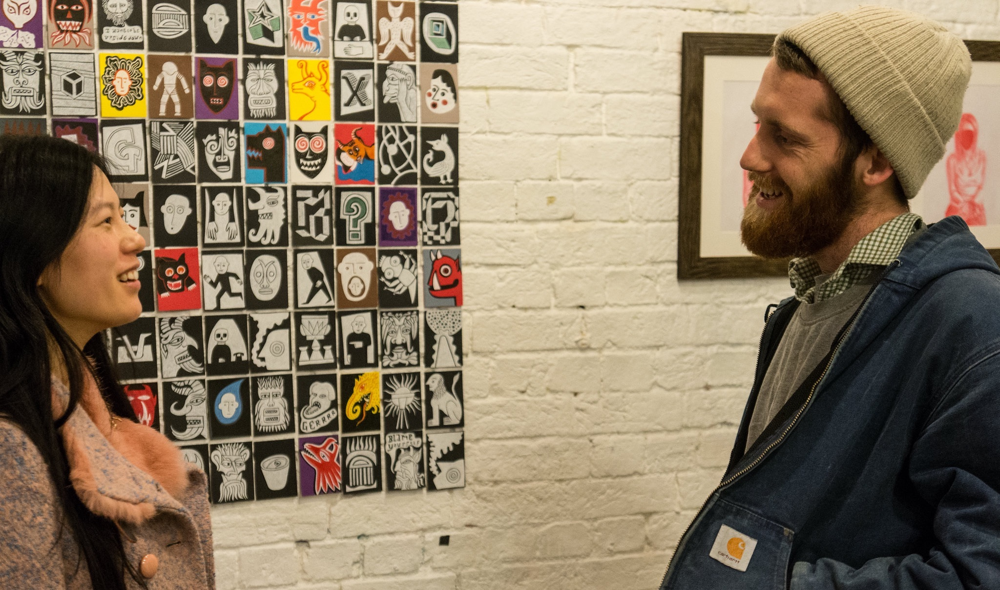
Littleport, 2016 (album on Flickr)
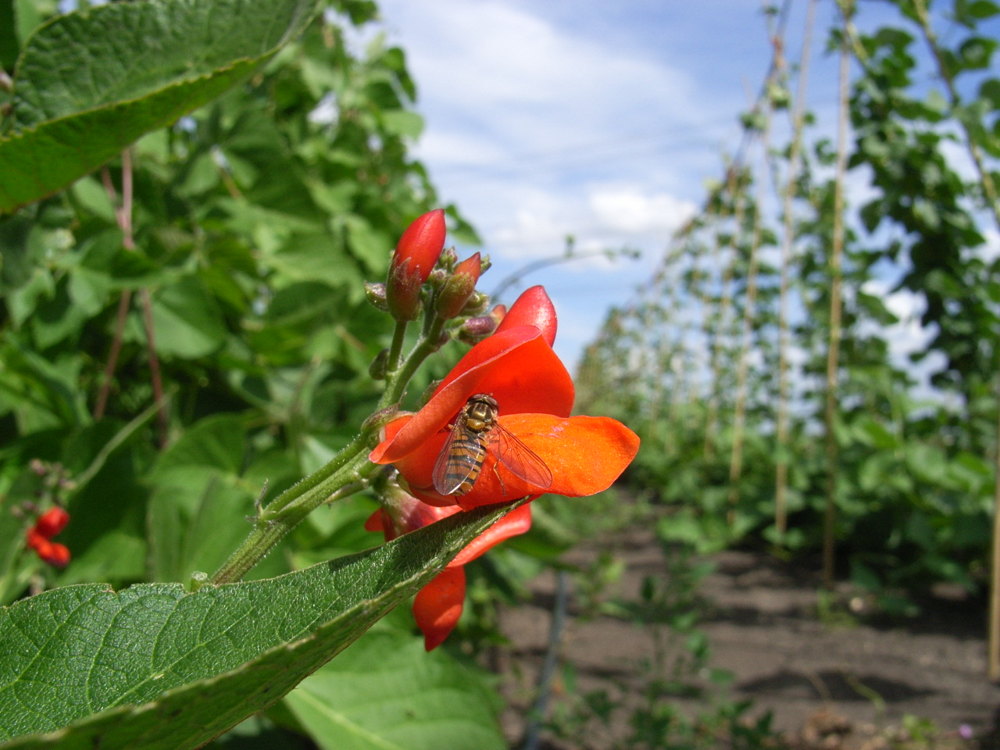